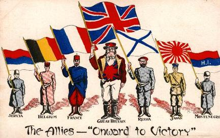
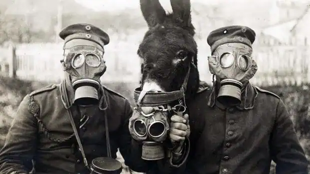
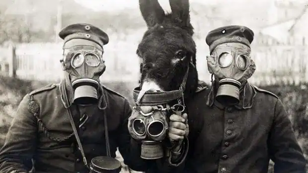

As a result, the fight was fierce and chaotic. Compared to the earthworks that appeared later on the Western Front, the trenches used by the Allied defenders were crude and provided only cover from bullets but little protection from artillery fire. However, the match revealed the immense difficulty of attacking stubborn defenders. Despite their numerical superiority and greater artillery power, the Germans were unable to break through the Allied lines.
Rapid rifle, machine-gun and artillery fire dealt a heavy blow to the advancing German infantry, and their attacks were often repulsed with heavy casualties. (S. Jones, 2015)
The battle was celebrated as a victory for France and Great Britain

Countries that participated
During the First World War, the Entente countries - Great Britain, France, Serbia and the Russian Empire (later joined by Italy, Greece, Portugal, Romania and the USA) - fought against the Central Powers: Germany and Austria-Hungary (later joined by the Ottoman Turks and Bulgaria). (Holocaust Encyclopdia, 2024)



During the First World War, the Entente countries - Great Britain, France, Serbia and the Russian Empire (later joined by Italy, Greece, Portugal, Romania and the USA) - fought against the Central Powers: Germany and Austria-Hungary (later joined by the Ottoman Turks and Bulgaria). (Holocaust Encyclopdia, 2024)

Chemical weapons:
The modern use of chemical weapons dates back to World War I, when both sides in the conflict used poisonous gases to cause excruciating suffering and massive casualties on the battlefield. These weapons mainly consist of well-known commercial chemicals that are injected into conventional ammunition such as grenades and artillery shells. The chemicals used are chlorine, phosgene (an asphyxiant) and mustard gas (which causes skin burns). The results are arbitrary and often disastrous. Almost 100,000 people died. (United Nations, 2015)
The modern use of chemical weapons dates back to World War I, when both sides in the conflict used poisonous gases to cause excruciating suffering and massive casualties on the battlefield. These weapons mainly consist of well-known commercial chemicals that are injected into conventional ammunition such as grenades and artillery shells. The chemicals used are chlorine, phosgene (an asphyxiant) and mustard gas (which causes skin burns). The results are arbitrary and often disastrous. Almost 100,000 people died. (United Nations, 2015)